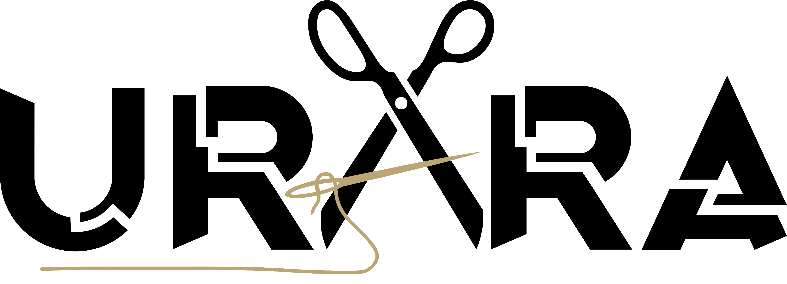

<header >

    <mat-sidenav-container fullscreen>
        <mat-sidenav #sidenav class="sidenav">
            <h2>Menu</h2>
            
            <div class="sidenav_nav">
                <ul class="nav_list">
                    <li class="nav_lisy-item">
                        <button mat-button class="nav_lisy-item-boton" routerLink="inicio">
                            Inicio
                        </button>
                    </li>
                    <li class="nav_lisy-item">
                        <button mat-button class="nav_lisy-item-boton" routerLink="catalogo">
                            Categoria
                        </button>
                    </li>
                </ul>
            </div>

        </mat-sidenav> 

        <div class="toolbar">
            <div class=" container barra">
                <a class="menu" (click)="sidenav.toggle()"><mat-icon >menu</mat-icon></a>
                
                <!-- <h1>URARA</h1> -->
                <a class="search"><mat-icon >search</mat-icon></a>
                
            </div>
        </div>
        
        <router-outlet></router-outlet>
        
        <app-footer></app-footer>
    </mat-sidenav-container>

    
    
</header>


  